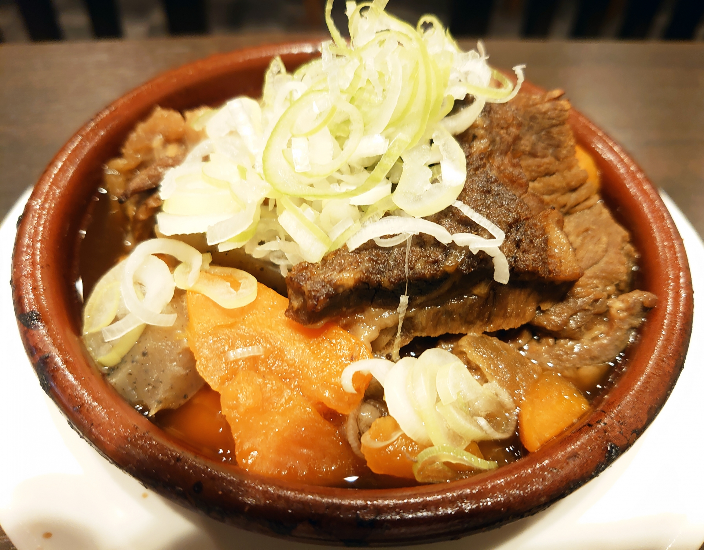
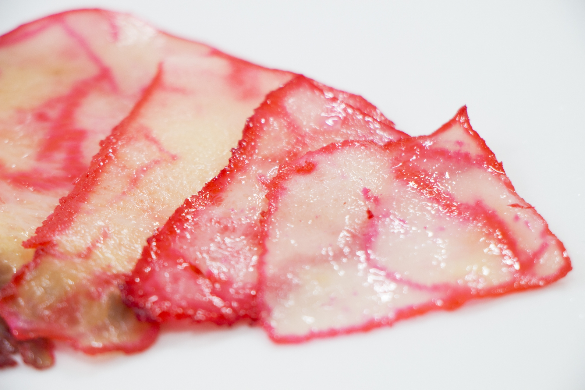

ディナーメニュー
おでん
おでん盛り合わせ1050円
味噌田楽400円
各200円
- 鰯つみれ
- 大根
- 玉子
- さつま揚げ
- 焼きちくわ
- こんにゃく
- しらたき
- ちくわ麩
- 豆腐
- 生揚げ
- 里芋
- はんぺん
- 昆布巻き
- 高野豆腐
- 銀杏串
各300円
- 牛すじ
- キャベツ巻き
- シュウマイ
- 椎茸
- 細茸
- 餅巾着
各400円
- つぶ貝
- 玉子焼き
各500円
- たこ
お刺身
鮪中落ち 800円
盛合せ3種 900円
盛合せ4種 1200円
盛合せ5種 1500円
当店名物
- 
銀九すじ1500円
牛すじをじっくり煮上げて、辛味噌で更に煮込みました。
牛すじをいっぱい食べたい方のために、たっぷり入ってます！ - 
鯨のベーコン1800円
銀座九丁目の60年に渡る築地～豊洲の市場コネクションを活用して良質な鯨ベーコンをご提供致します。
郷愁の味をお楽しみください。！
一品料理
真蛸唐揚げ1200円
大海老のフライ1200円
めっちゃチーズなオムレツ900円
懐かしハムカツ850円
牛タンの塩焼き1500円
サラダ
アスパラとトマトの和風サラダ850円
明太ポテトサラダ850円
大根とジャコのサラダ850円
シーザーサラダ大盛1000円
お食事
茶飯（おでんのスープで炊き上げた味付けご飯）300円
しじみ汁300円
お新香の盛合せ650円
茶飯セット（茶飯、しじみ汁、お新香）300円
名物 焼きおにぎり（2種）600円
お茶漬け 鮭・梅・海苔600円
ガーリックチャーハン900円
季節のデザートのご用意御座います。係りの者にお尋ね下さい。

お飲み物
ビール
瓶ビール（中）550円
生ビール エビス（中）600円
サワー
梅酒サワー600円
生レモンサワー600円
生グレープフルーツサワー600円
ウーロンハイ600円
焼酎
麦 焼酎九丁目グラス 550円
ボトル 3500円
芋 龍雲グラス 580円
ボトル 3800円
芋 古老の語りグラス 580円
ボトル 3800円
黒糖 三年寝太蔵グラス 580円
ボトル 4500円
ミネラルウォーターペットボトル 320円
緑茶、ウーロン茶ペットボトル 400円
梅酒
国盛にごり梅酒グラス 580円
ボトル 3800円
ウィスキー
スーパーニッカシングル 550円
白州シングル 550円
シーバスリーガルシングル 550円
お燗のお酒
剣菱樽酒1合 680円
国盛1合 550円
冷やしたお酒
剣菱樽酒1合 680円
ボトル銘酒
極上吉野川ボトル 2700円
菊姫ボトル 3000円
八海山ボトル 4000円
浦霞 禅ボトル 5200円
その他の「銘酒」については、女将にお尋ねください。
ボトル冷酒
国盛ボトル 900円
浦霞ボトル 1000円
八海山ボトル 4000円
浦霞 禅ボトル 5200円
各300ml